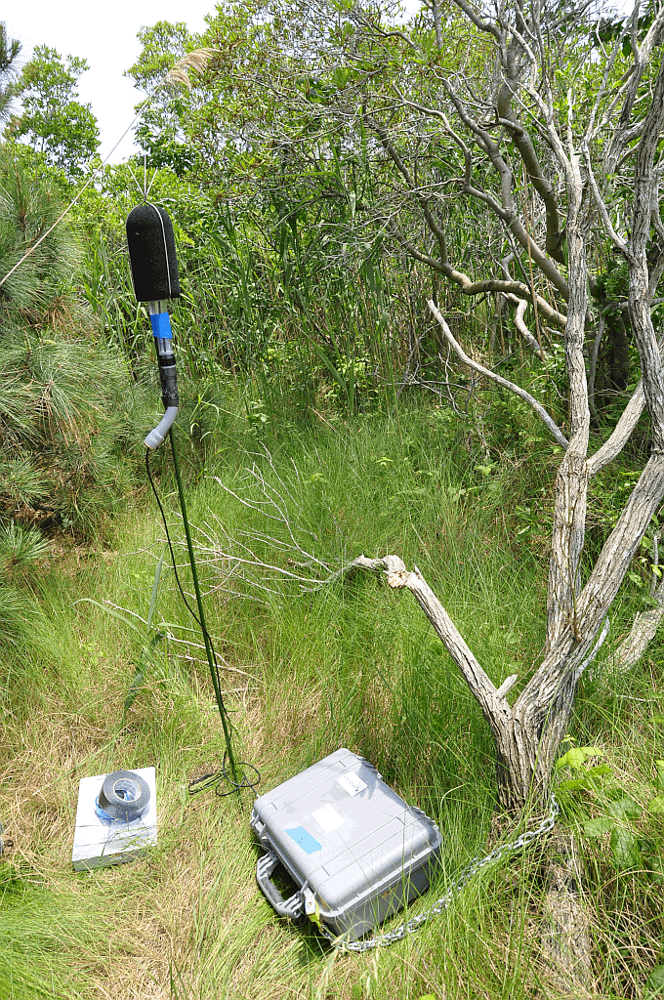

No Code Website BuilderIf you want to know what the background noise levels are in your area, there are few options. One option is to use a look-up table of noise levels. There are several engineering books available that discuss background noise levels. See the list of resources at the bottom of this page.
However, if you want to know the actual background noise levels at a specific location, nothing beats taking noise measurements. The ANSI standard ANSI S.12.9 Part 2 provides details about exactly how these measurements should be conducted, from how many locations you should measure to how long those measurements should last. Then you need the proper equipment.
Equipment and Setup
You need Sound Level Meters designed for outdoor measurements for these measurements. And not just any meter – they must be equipped with environmental cases and ready to be left outdoors. These types of meters have the ability to collect data over long periods of time. Some long-term emplacements require solar panels to ensure they have enough power. If the meters are in the field for more than a few days they may require regular servicing to ensure proper data is collected. Nothing is worse than returning to a meter location only to discover that the meter failed weeks before, losing all of that data!
The meter itself is put in the environmental case while the microphone, connected by a cable, is mounted on a tripod. Bird spikes are put on the microphone windscreen to deter song birds from singing into the microphone. The case is often locked to a tree or fence by a chain to help keep it from being stolen.

No Code Website Builder